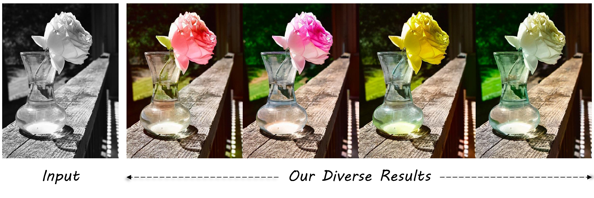
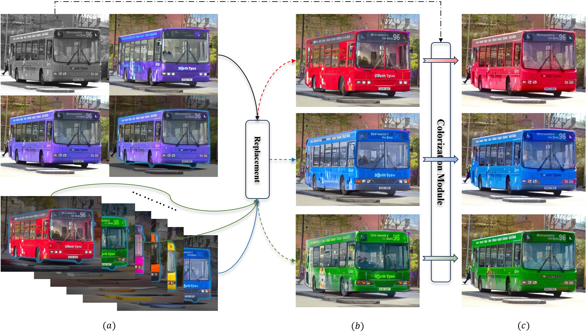

We propose a framework for automatic colorization that allows for iterative editing and modifications. The core of our framework lies in an imagination module: by understanding the content within a grayscale image, we utilize a pre-trained image generation model to generate multiple images that contain the same content. These images serve as references for coloring, mimicking the process of human experts. As the synthesized images can be imperfect or different from the original grayscale image, we propose a Reference Refinement Module to select the optimal reference composition. Unlike most previous end-to-end automatic colorization algorithms, our framework allows for iterative and localized modifications of the colorization results because we explicitly model the coloring samples. Extensive experiments demonstrate the superiority of our framework over existing automatic colorization algorithms in editability and flexibility.
We can synthesize diverse colorful references from Imagination Module, yielding diverse colorzation results.
The top panel of (a) shows the black-and-white input, the reference, the colorization result, and the area marked by the user's mouse click indicating dissatisfaction with the colorization. The bottom panel of (a) displays multiple reference candidates generated by our Imagination Module. (b) Users select a preferred segment from the reference candidates to replace the unsatisfactory part of the reference, consisting of a new reference. (c) The colorization result after the adjustment.
Comparison with the state-of-the-art automatic colorization methods on the COCO-Stuff vaidation dataset. Our method can generate more natural and photo-realistic colors. Please zoom in for the best view.
Comparison with the state-of-the-art automatic colorization methods on the in-the-wild vaidation dataset which was collected randomly on the Internet. Our method can generate more natural and photo-realistic colors. Please zoom in for the best view.
@article{cong2024imaginecolorization,
author = {Cong, Xiaoyan and Wu, Yue and Chen, Qifeng and Lei, Chenyang},
title = {Automatic Controllable Colorization via Imagination},
journal = {CVPR},
year = {2024},
}